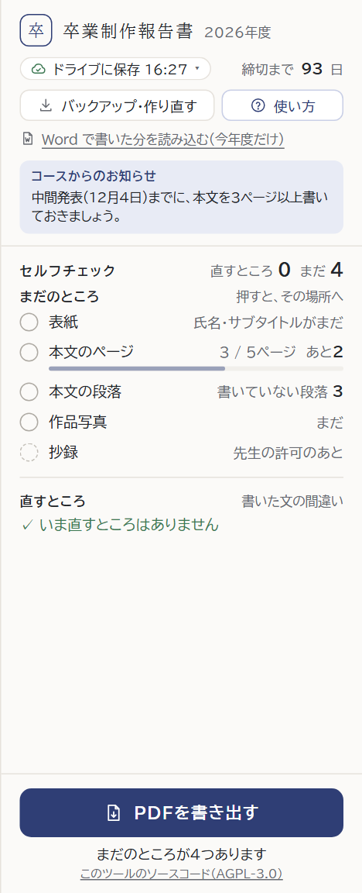

右パネルに書かれているものが詰まって見える
への案です。1つ選んでください。
いまは、字が小さく（11〜12.5px）、行の間がせまく、小さな説明の字があちこちにあります。画面は本物のツールを開いて、右の欄だけ書き換えて写しました（絵を押すと大きく見られます）。
字が小さく、行がつまっている。
書いている途中、動かさずに見える指摘：2つ置き場所はそのまま。行の高さ 26 → 32px、まとまりの間に線。
よいところ「保存・締切」「お知らせ」「セルフチェック」を白いカードに。「使い方」は右上。
よいところ「使い方」「バックアップ・作り直す」「Word の読み込み」を「メニュー」に。上が2行になる。字と行は案Aと同じ。
よいところ